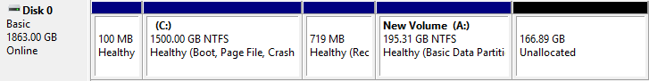
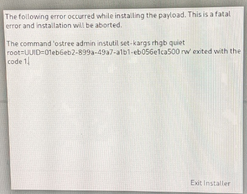
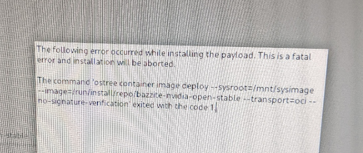
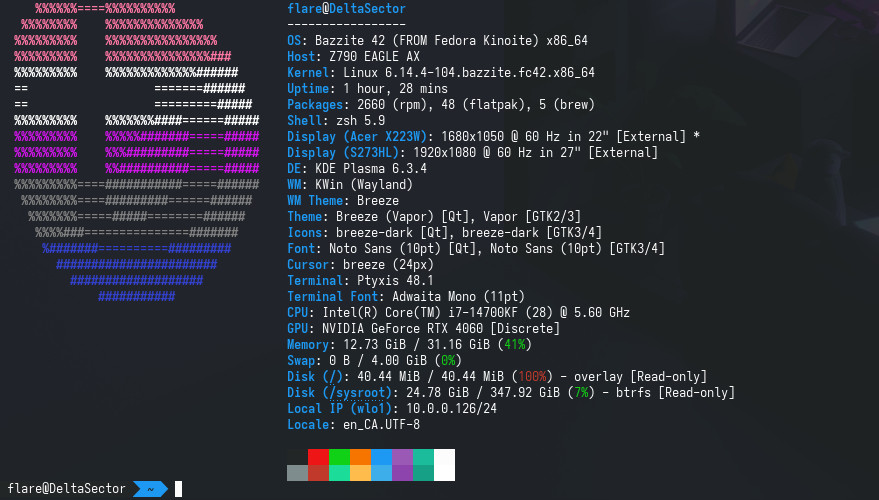
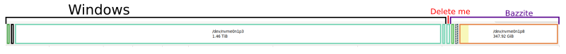

Moving To Linux - Phase 1
Distro: Bazzite 
Phase 1: Install and setup
Hardware in need of software
- G502 Mouse - RGB, sensitivity
- Stream deck mini
I left 166.89GB at end of disk when I installed Windows on my pc, planning for this

Setup Problems
Partitioning

'ostree admin instutil set-kargs rhgb quiet root=UUID=... rw' exited with the code 1

'ostree container image deploy --sysroot=... --image=... --transport=oci --no-signature-verification' exited with the code 1
If I reboot and try again
what I did wrong: incorrect partitioning
my setup:
mount point: /boot/efi
format: EFI system partition
size: 100MB
mount point:
format: btrfs
size: [max]
mount point: /
format: btrfs (subvolume)
Correct Partitioning
mount point: /boot/efi
format: EFI system partition
size: 300MB
mount point: /boot
format: ext4
size: 1GB
mount point:
format: btrfs
size: [max]
mount point: /
format: btrfs (subvolume)
mount point: /var
format: btrfs (subvolume)
mount point: /var/home
format: btrfs (subvolume)
Post Install

| Device | Software |
|---|---|
| G502 Mouse | piper |
| Stream deck | OpenDeck |
VSCode user settings
{
"terminal.integrated.defaultProfile.linux": "bash",
"terminal.integrated.profiles.linux": {
"bash": {
"path": "host-spawn",
"args": ["/var/home/linuxbrew/.linuxbrew/bin/zsh"]
}
}
}

Notes
- LAYER VSCode dont use flathub
Next Steps
- move files and accounts
- setup VR
- move partitions around
- this might require a reinstall
Concluding Notes
- So far I have enjoyed bazzite
- easy to install when you follow the guide
- DO NOT FOLLOW THE PARTITIONING GUIDE FOR ARCH ON BAZZITE
- I need to clean up my files in windows